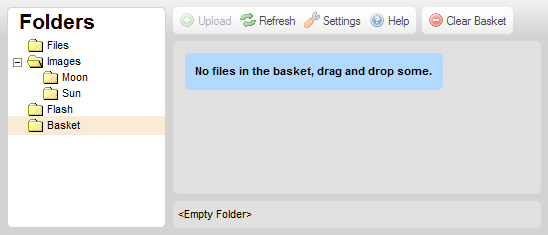
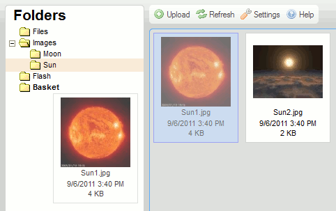
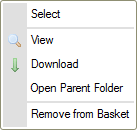
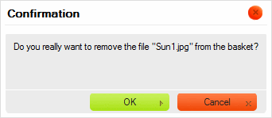
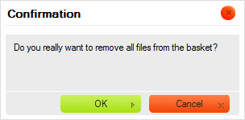
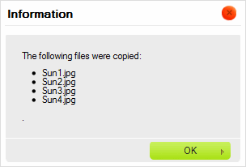

Složka Košík, která je dostupná v Panelu složek otevře Panel Košíku.
Košík je virtuální a dočasné úložiště, které může být použito k provádění hromadných operací se soubory v CKFinder. Je to virtuální úložiště, protože soubory, které jsou umístěny do Košíku nejsou fyzicky přesunuty z jejich nadřazených složek.
Obrázek níže představuje Panel Košíku po kliknutí na složku Košík (Basket) v Panelu složek.

Poznámka: Složka Košík je soukromá v tom smyslu, že není sdílena s ostatními uživateli a je svázána s relací Vašeho prohlížeče.
Na začátku každé relace CKFinder je Košík prázdný. Bude zobrazena zpráva vyzývající Vás k přetáhnutí souborů do Košíku. Abyste toto provedli, přejděte do složky, která obsahuje soubory, které chcete použít, přetáhněte je do složky Košík v Panelu složek.

Soubor by se nyní měl objevit ve složce Košík.
Když je soubor umístěn do Košíku, jeho kontextové menu se změní, aby zahrnovalo pouze ty operace, které jsou dostupné v této zvláštní složce.

Existují dva způsoby jak soubor odstranit z Košíku. Za prvé můžete odstranit jednotlivé soubory zvolením možnosti Odstranit z Košíku (Remove from Basket) z kontextového menu souboru. Když zvolíte možnost odstranění z kontextového menu, bude zobrazena potvrzovací zpráva.

Můžete také odstranit všechny soubory najednou kliknutím na tlačítko Vyčistit Košík (Clear Basket) v panelu nástrojů. Když toto provedete, budete vyzváni k potvrzení, zdali opravdu zamýšlíte odstranit veškerý obsah Košíku.

Poznámka: Odstranění souboru z Košíku ho nesmaže ze souborového systému. Stále bude dostupný v nadřazené složce.
Jak je zmíněno výše, Košík je virtuální složka, která obsahuje soubory, které jsou fyzicky umístěny v jiných složkách souborového systému. Pokud si chcete prohlédnout zdrojovou složku souboru, zvolte možnost Otevřít nadřazenou složku (Open Parent Folder) z kontextového menu souboru. CKFinder zobrazí složku, v které se soubor nachází.
Jakmile pohodlně umístíte některé soubory Košíku, budete je moci zkopírovat do jiné (fyzické) složky. Abyste tohoto dosáhli, zvolte cílovou složku v Panelu složek a zvolte možnost Kopírovat soubory z Košíku (Copy Files from Basket) z jejího kontextového menu.
Bude zobrazena potvrzující zpráva vypisující soubory, které byly zkopírovány do cílové složky.

Soubory budou zkopírovány a jejich kopie umístěny do cílové složky. Cílová složka zůstane nedotčena.
Košík je také velmi užitečný, pokud chcete přesunovat soubory mezi složkami. Jakmile umístíte nějaké soubory v Košíku, vyberte cílovou složku v Panelu složek a zvolte možnost Přesunout soubory z Košíku (Move Files from Basket) z jejího kontextového menu.
Bude zobrazena potvrzující zpráva vypisující soubory, které byly přesunuty do cílové složky.
Soubory budou odstraněny z cílové složky a vloženy do cílové.